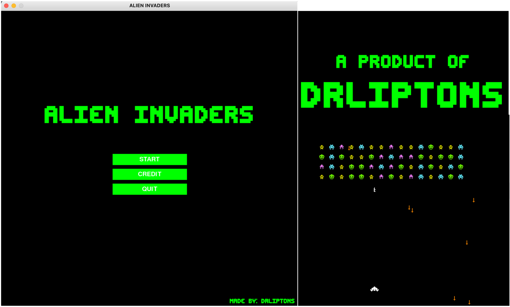
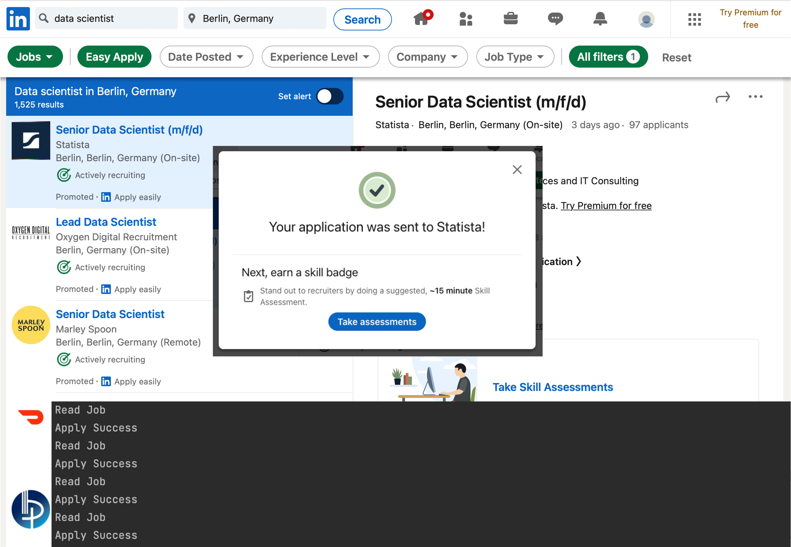
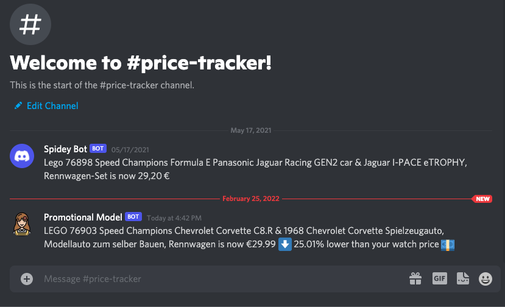
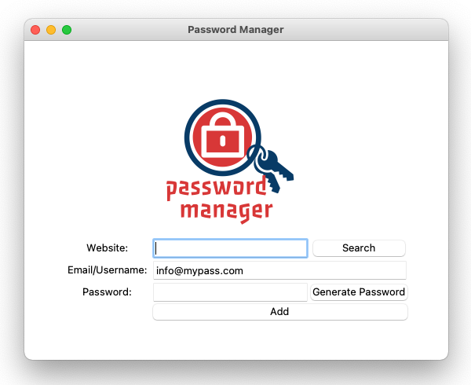
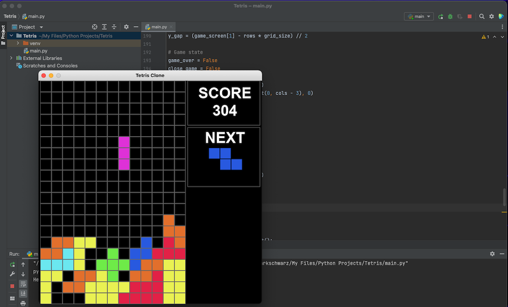
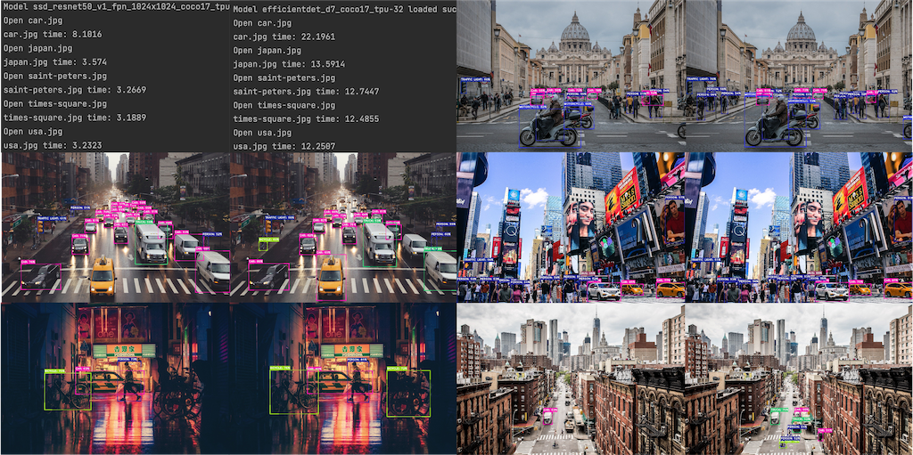
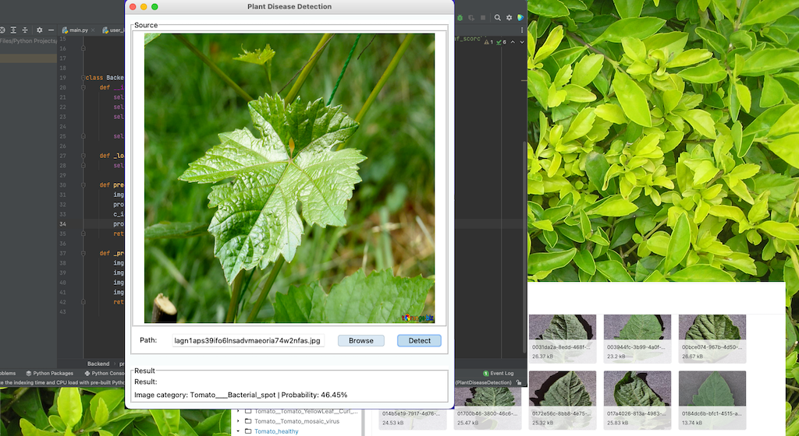

References
This page provides an overview of all the projects available on my repository. It should serve the purpose of showing brief project information enough to have an idea how the project may look like. A link has been provided under the description if more details of the project are required. The link should lead to a detailed project page that has included a more detailed project description, an external link to the project's repository (if applicable), available features, the project's changelog, etc.
Table of Contents
At a Glance
Python projects
- Get Live Financial Data with Dashboard
- Flight Deals with Google Sheet and Message Alert
- Alien Invaders Clone
- Automated Job Application
- Price Tracker with Discord Message Alert
- Password Manager
- Text2MorseCode with Sound
- Stock News Alert
- Tetris Clone
TensorFlow
Python projects
Get Live Financial Data with Dashboard
A full GUI application for get and visualize live financial data
üóì Added: February 23, 2022 | ‚öôÔ∏è Updated March 02, 2022

This code is part of a larger project I'm currently working on to get and show real-time stock prices. The Data will be scraped from a financial website and be save into a CSV file. Finally, the data will be cleaned and displayed on a dashboard.
Flight Deals
Get the best flight deals like a pro
üóì Added: February 23, 2022

Flight deals is an automated flight price search and notification program. It’s designed to be run by a task manager to check flight prices on (at least) a daily basis. The program was inspired by my price tracking websites. Nowadays, there a quite a lot of deals checkers. In order to use them, you have to register with your email to get a price notification, mostly on a daily basis. This code can be run on l local computer or be deployed on a task-managing website. It’s enough to run it once a day.
Alien Invaders Clone
A clone of one of the most successful game in the world "SPACE INVADERS"

üóì Added: February 20, 2022
Alien Invaders is a game inspired by the original game Space Invaders by Taito Corporation. Space Invaders was developed by Tomohiro Nishikado and launched in 1978. The game was a tremendous success with grossed $3.8 billion. I think we all know how fun this game is. For more information about the original game here.
I have spent so many great hours in my childhood playing this game. On one weekend, I decided to make a quick clone with python. The game still lacks a couple of functions, but it was close to what I have expected.
Automated Job Application
No more repeated job application filling
üóì Added: February 18, 2022

Automatically log in, fill in the information, and apply for a job offer on LinkedIn with only a few lines of code on Python. That is the one-line description of this project. I always wanted to have some kind of automated system to help fill in all the repetitive information of an online application. In fact, it is simpler than first expected with the help of Selenium and ChromeDriver.
Price Tracker with discord message alert
Build your own price tracker with discord message alert
üóì Added: February 18, 2022

A simple price tracker program with a Discord message alert. Track the current price of a product and compare it with the expected price. Receive a discord message when the current price is decreasing.
Password Manager
Generate and save your password
üóì Added: February 17, 2022

Password Manager is a simple password-generating application. The application can generate a random password that contains letters, numbers, and symbols. The length of the password will randomly vary between 12 and 18 symbols. Users can save their generated username and password in the application and search for it later.
The user interface is made with Tkinter and is nothing fancy. I have noted that at the time of writing this readme file, Tkinter isn't much enjoyable in some function on mac as of on windows. Mac users might be frustrated sometimes when Tkinter isn't working as expected.
Text to Morse Code
Easy convert text into morse code
üóì Added: February 17, 2022

A funny little side project to translate text into morse code. The program can convert alphabets, numbers, and a few symbols in to morse code. As a final result the converted morse code text will be shown on the console and a sound illustration will be played for each text.
Stock News Alert
Easy convert text into morse code
üóì Added: February 17, 2022

Stock News Alert is a little project for retrieving stock news by calling an API of a news website. It was intended to be a messenger üöö (kinda) to deliver the news. The news was originally supposed to be sent by Twilio. But somehow they charge money. I needed an alternative and got the idea to send the news to discord instead. You might use other messengers as wish.
Tetris Clone
A replication of the famous game "Tetris" on python
üóì Added: February 17, 2022

Tetris is a classical puzzle game created by Alexey Pajitnov in 1984. I think I don't need to talk more about what Tetris is. Everyone knows that game. Who doesn't? This Tetris clone version was included with most of the basic functionalities of its original version. I intended to make this as a single script. Somehow the code getting longer and I've stopped before it's getting too long.
TensorFlow projects
Object Detection
Make object detection easier and prettier to understand
üóì Added: March 15, 2022

This small but beautiful project is about object detection using pre-trained models from TensorFlow 2 Model Zoo. The aim of this project is to lay the foundation of how pre-trained models could be easily deployed and applied to other projects. Two models (RetinaNet50 and EfficientDet D7) were tested on a local machine with the same data sources to compare the differences, e.g. loading time, calculation speed, etc. The results aren't to compare which model is better, rather explore the differences of choices. The models were tested by using images, a video clip, and a live webcam feed.
Plant Disease Detection
A step-by-step documentation how to build a complete plant disease detection application
üóì Added: February 17, 2022

This is my first project of a multi-part documented project. The project involved creating a machine-learning model with TensorFlow and integrating the model into a GUI application. The application is a user-friendly application with a few simple, easy-to-use functions. Users can browse a picture from their local machine and use the machine learning model to detect the health status of a plant leaf. The prediction result will display the probability of its healthiness on the application.